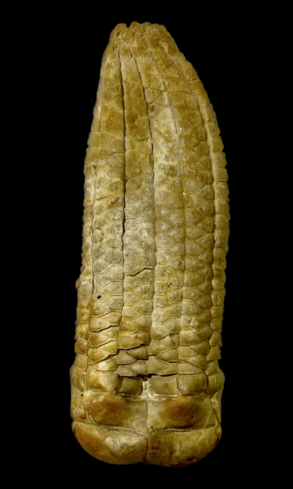
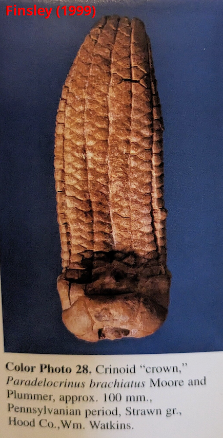
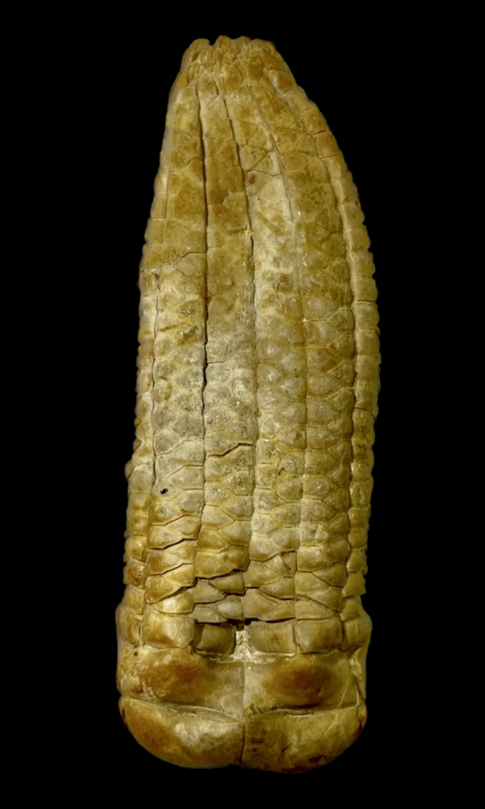
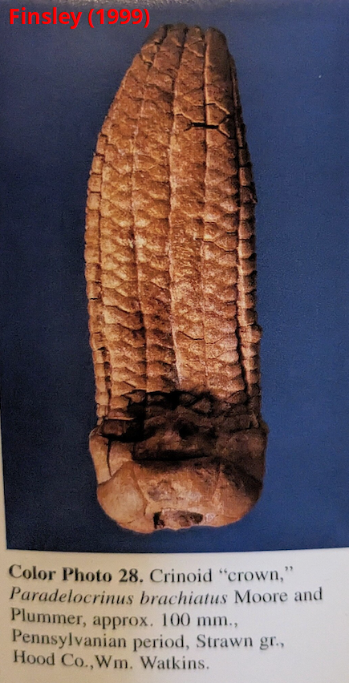

Neoprotencrinus brachiatus
• Pennsylvanian
• Millsap Lake Formation, Strawn Group
• Hood County, Texas, USA
Size: 6.5 cm crown
Before I discuss the paleontology, I must mention that this particular specimen is quite special for historical reasons. It was originally in the collection of William T. Watkins, who worked and published with Harrell L. Strimple himself, primarily on the Carboniferous crinoids of Texas which he hunted extensively. Moreover, it is figured in the book "A Field Guide to Fossils of Texas" by Charles E. Finsley (last photo), alongside a handful of other crinoids from the Pennsylvanian of Texas.
This crinoid is "Neoprotencrinus brachiatus" (formerly "Paradelocrinus brachiatus"), a deceptively simple-looking but very unusual Pennsylvanian cladid crinoid. Foremost, being a member of the Erisocrinidae it completely lacks anal plates in the calyx, making it more-or-less fully pentamerically symmetrical. This is the extreme of crinoid calyx plate reduction seen in the late Paleozoic. More characteristically, this genus has incredibly-reduced infrabasal and basal plates, with corresponding expansion of the radials which curve into the basal concavity of the cup. Viewed from the side, the radial plates occupy the entire height of the calyx with no infrabasal or basal plates visible. This striking arrangement of proportionately extended radials is probably what gives the unusual genus its name (the latin "proten" meaning "stretch").
 
